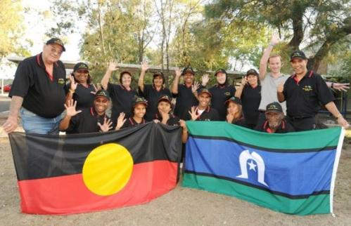

The National headspace Awards 2016
Celebrating Excellence at headspace
The National headspace Awards have been developed to recognise and celebrate the teams and individuals who drive and challenge headspace to offer the best service possible to young people and their families.
There are five categories in the National headspace Awards:
The Award for Excellence in Innovation
The Award for Excellence in Collaboration
The Award for Excellence in Inclusion
The Award for Outstanding Contribution to headspace
The Award for Outstanding Contribution to Youth Advocacy
Outstanding Contribution to headspace
JOINT WINNER - Dr John Butler, GP, headspace Gosford
Dr John Butler has worked with headspace Gosford for over six years. In that time he has provided over 10,000 occasions of service and helped many young people and their families. John demonstrates the headspace values, aligns to the headspace code of conduct, maintains the good reputation of headspace and provides high quality work and support.
John provides a holistic service to the young people who come to see him. He is kind, caring and genuinely interested in our clients. Simply put, he is a rock of support for many of our young clients.
John values a team-based approach to care for our clients. He attends and contributes to multi-disciplinary team meetings and case reviews. He provides support for the other GPs on site, past and current, and works closely with the medical team within our tertiary adolescent mental health service on site.
He always provides training and support for new staff joining our team. As well as consulting with professionals within our service and making appropriate referrals on for clients, John is inclusive of significant others in our client's lives. He is very family focused and often offers joint consultations with family or partners to enhance the care and communication that our clients experience outside of headspace. John is also listed as a LGBTI-friendly GP by the Positive Support Network.
John always goes the extra mile to provide excellent service to our clients. He makes himself available to staff for clinical consultations wherever possible and is always present and constructive in his feedback and advice.
He is an outstanding resource for the Youth Access Team who regularly consult with, and refer to, John for clinical review for clients. John works three days each week at headspace Gosford but regularly comes in the other days to write up notes or see clients who could not attend appointments on his set days, or who could not be squeezed in a normal appointment day.
There have been many occasions where John has come into headspace on a day off to see a client who was too uncomfortable to come in to see him on a busy clinic day.
JOINT WINNER - Sally Lamb, Reception and administration, headspace Nowra
Sally is genuinely invested in the wellbeing of every young person who comes in the door. There are so many examples of Sally’s acts of kindness and care. She has a few regular clients that she is the ‘alarm clock’ for, as they have difficulties waking up due to their mental health she has an arranged to call them to give them a wakeup call.
She goes above and beyond to follow up clients and make space for clients to get appointments as she wants them to get a service swiftly.
Sally is always on top of things. She always knows who has availability how long the waitlist is. She will always quickly try and fill available appointments so our contractors and GP’s are happy and our waitlists are manageable. She is always juggling the diary and incredibly flexible in rearranging appointments.
She will stay back with the GPs and psychologist if needed at night if their clients are in crisis or appointment runs overtime.
Sally always provides an empathic ear to parents who are feeling overwhelmed in the waiting room, and has been known to thrown in a bit of ad hoc child minding in the waiting room.
She will do a lot of the staff’s follow up letters that save us heaps of time. She also confirms all of our appointments and does all the booking. We are truly spoilt to have her doing all of this. As we have all come from different organisations where this does not happen.
We are currently going through accreditation, Sally has been so helpful is getting everything organised and has been the go to person for accreditation and she is across all of our systems. So impressive are the systems Sally has created that our sister headspace site is looking to adopt some of them.
Bob McKevitt, Manager Fundraising and Partnerships, headspace National Office
Bob has been working at headspace for five years and in that time has lived the headspace values in his every day work within himself, the Corporate Affairs team and across the headspace network.
He is well known by staff at headspace National Office and throughout centres for his positive attitude to work and to others. He boosts moral to those around him and is the glue that keeps teams, departments and centre/National Office relationships flourishing.
Since Bob started the amount of fundraising income raised by headspace has increased by 10 times the amount to that prior to him working at headspace. He has consistently beaten fundraising goals for the organisation year on year.
He has developed integral partnerships to help raise awareness of headspace services to young people. This includes our partnership with REST who have provided hundreds of thousands of dollars for us to run Groovin’ The Moo festivals as well as develop important video stories of hY NRG members. Other important relationships he has managed include ANZ, Melbourne Stars, Run Melbourne, Blackmores, Aroma Coffee.
Bob also consistently gives up his own times to run marathons, half marathons and other fun runs for headspace. One year even running the Run Melbourne half marathon in a lycra green man suit. That commitment to headspace is inspiring to others to get involved and do more to advocate the work we do. He also signed up for the headspace Netball team for both seasons and helped get members from other teams to take part.
He always takes part in any 'organised fun' at National Office and motivates others to get involved as well. He has also provided excellent memorable singing entertainment at staff Christmas parties.
When speaking to colleagues about Bob the words 'fun, helpful, passionate and friendly' consistently come up.
Bob always takes on responsibility of other headspace events outside his work remit including coordinating the headspace presence at Sydney Mardi Gras three years in a row.
He has volunteered his time at every music festival and campaign event that headspace has done over the past five years. This has required giving up a lot of his own time.
Outstanding Contribution to Youth Advocacy
WINNER - Ella Konrad-East, a young person working with Western Australia headspace centres
 Ella is a young person who has demonstrated the headspace values of innovation, collaboration, inclusiveness, passion, and responsiveness by developing and coordinating an art exhibition and mental health forum in September 2015. All funds raised were donated to headspace centres across Western Australia.
Ella is a young person who has demonstrated the headspace values of innovation, collaboration, inclusiveness, passion, and responsiveness by developing and coordinating an art exhibition and mental health forum in September 2015. All funds raised were donated to headspace centres across Western Australia.
Ella identified a need and an opportunity to engage with individuals through art and to use this as a medium with which to start a conversation about mental health. She developed the ‘Stand Tall and See’ art initiative.
This initiative was made up of two parts: first, an exhibition that sought donated art from local, national and international artists and illustrators. Secondly, a forum where individuals could openly discuss their struggles with their peers and mental health professionals in a safe space. In preparation for the exhibition, Ella fundraised to cover the costs of the event, raising $3,000.
In addition to advocating for the health and wellbeing of young people locally, Ella also sought to aid other young people in their own skill development. Ella provided support to young people submitting art works wherever possible, many of whom reported not having been involved in art projects previously.
Ella identified the importance of working collaboratively and inclusively with the community in order to run the event and also to get the community talking about mental health. Ella collaborated with local headspace centres, local, national and international artists, local art galleries, local business, local mental health professionals, and also the broader Perth community in both the establishment and coordination of this initiative.
Jarrad Hickmott, previous hY NRG member and current Youth Advisor
Jarrad has been involved with headspace for around six years, originally through his local centres: headspace Camperdown and headspace Campbelltown. More recently he has been involved as a member of hY NRG and is now one of four Youth Advisors supporting the new hY NRG.
Jarrad epitomises the headspace values and has time and time again demonstrated his commitment to headspace and its values through his work over the years.
In his role with hY NRG, Jarrad lead the scoping and development of a project that focused on engaging young disengaged males through gaming. Young males are a difficult audience for headspace to target and Jarrad saw a gap and devised an innovative way to reach this audience that hadn’t been done before at headspace.
Jarrad has an abundance of passion for headspace and what the organisation works to achieve. He’s always the first to put his hand up to work with the headspace National Office team to:
- Represent headspace at presentations to potential financial donors and supporters through sharing his own story
- Get involved and go the extra mile through being part of the crew at headspace events at Mardi Gras, the Blackmores Sydney Running Festival and numerous other events
- Represent the voice of young people at events where headspace is sharing its work
On top of all of the above, Jarrad has taken the extra step of sharing his experiences with anxiety so that other young people can hear about how they can get help with similar issues. Jarrad’s story was one of five developed as part of the ‘headspace stories’ series, which involved spending a day with a film crew following him around while he travelled to university and went about his day. Sharing his personal story in this way is truly remarkable and the film based on Jarrad is a testament to what a wonderful ambassador he is for headspace.
Jarrad gave his time and took part in a number of sessions with headspace National Office to plan the organisation’s strategic approach for the future.
Casey Mason, previous hY NRG member and current Youth Advisor
Casey has been involved in youth advocacy with headspace across all levels of the network, making her way from the local Youth Reference Group at headspace Geelong, to become a member of hY NRG. She is now a Youth Adviser to the new hY NRG.
Casey has worked with headspace on many projects, but this nomination is focused on her work to help develop the Youth Advocates Program (YAP).
The Youth Advocates Program was developed to ensure young people engaged at headspace centres and as part of the headspace Youth National Reference Group (hY NRG), are resourced and have opportunities to develop skills to become advocates for change in their communities. It is through YAP that Casey has shown an incredible amount of commitment to giving young people a voice in the development of headspace services
Casey demonstrates a vibrant and passionate commitment to the headspace values. As a member of the project steering committee, and then as a co-facilitator of the launch event, Casey was able to give insight into young people’s experience of youth participation at headspace.
She worked with the facilitators of the pilot delivery of YAP, and was able to adapt the program to meet the needs of each of the pilot groups. Casey’s approach to the design of the activities in YAP have shown an innovative approach to thinking, which she has then tailored after consultation with the consultative representatives for YAP from hY NRG, to include their feedback, as well as the practical experience with the pilot, to deliver a more inclusive and responsive final training package for use by centres. She represented headspace and YAP at the International Youth
Mental Health Conference in Montreal in September 2015 with the full confidence of the project team to present a table top presentation of the completed YAP training.
She has shown leadership in the development and delivery of the two day in person launch event for YAP. This involved presenting an overview of YAP to the 70+ participants, and then leading the hands on train the trainer activities with a group of 20 staff from headspace centres.
Excellence in Inclusion
WINNER - The Afghan Refugee and Asylum Seeker Youth Mental Health Engagement Project, headspace Dandenong
The project aimed to improve the mental health outcomes for young Afghan refugees and asylum seekers in the South East Melbourne catchment. The project was delivered through four streams, all based on a participatory action research approach:
- Development of culturally appropriate youth community engagement strategies and resources that will promote the emotional health and wellbeing of young Afghan refugees and asylum seekers.
- Development of culturally appropriate care pathways that will improve access to, and use of, headspace Dandenong for young Afghan refugees and asylum seekers.
- Development of strategies that will build the capacity and expertise of headspace Dandenong staff in providing support and/or treatment services to young Afghan refugee and asylum seekers.
- Development of a transferrable framework for engaging with hard to reach refugee and asylum seeker communities that can be applied in other headspace centres across Australia
The Afghan Youth Leaders Group included a diverse group of 12 young people from three Afghan ethnicities (Hazara, Tajik, Pashtun). They also represented a variety of life experience. Some members of the group were born in Australia with parents who had come as refugees, others had come to Australia as unaccompanied minors while still others were asylum seekers.
In the ten months leading up to the start of the project, the team conducted a comprehensive needs assessment process conducted in partnership with the local Afghan community. More than 200 community members took part in this process.
Outcomes:
- English language classes were delivered to 87 Afghan young people
- 92 Afghan young people took part in daytrips to build social inclusion and trust through providing opportunities for connection
- Two culturally sensitive DVDs were produced to inform young Afghan refugees and asylum seekers on mental health
Yarn Safe campaign team, Strategic Communications, headspace National Office
YarnSafe is the first co-designed and youth-led national Aboriginal and Torres Strait Islander youth mental health campaign of its kind in Australia.
The project:
The project brought together headspace staff, Aboriginal and Torres Strait Islander young people, and expert community stakeholders to develop a culturally appropriate campaign that has made a measurable difference to the lives of young Aboriginal and Torres Strait Islander people.
Through a national recruitment process 12 young people were selected to form the youth advisory group. The group came together to attend various workshops, and a series of phone and online interactions, where they conceptualised the campaign. Young people provided direction into every aspect of the campaign, including language, colours, messaging and design.
Cultural Competency training was rolled out by the headspace Aboriginal and Torres Strait Islander team, led by Sam Wild, across Australia to help headspace staff work with this group of young people.
The campaign spoke honestly and positively to young people who related to the line ‘got a lot going on?’ with the tagline ‘there’s no shame in talking it out’, encouraging them to seek help. Campaign evaluation showed that young Aboriginal and Torres Strait Islander people overwhelmingly found headspace to be a safe and culturally appropriate service to access.
Over 20 locations across Australia were visited by the headspace team to collect video and photo content to build the campaign, ensuring there was a variety of landscapes and people to represent the diversity of Aboriginal and Torres Strait Islander youth.
Outcomes:
- A 32 per cent increase in the number of young Aboriginal and Torres Strait Islander people attending headspace centres
- 77 per cent of headspace centres said the campaign helped them engage with Aboriginal and Torres Strait Islander young people
headspace Mount Isa
The headspace Mount Isa team actively works to decrease disparities in the experience, access and outcomes for young people from diverse backgrounds.
Mount Isa is a small community with people from many different cultural backgrounds. With mining as the predominant industry in the region, workers and their families move here from not only all over the country but all over the world. As Mount Isa is located on Kalkadoon country, it is home to a large number of Kalkadoon young people, plus other young people from other Aboriginal and Torres Strait Islander backgrounds.
With a staff member being Kalkadoon, the lead agency of the centre, an Aboriginal Health Service, and the team having a good relationship with the local Kalkadoon elders, the staff have ample opportunity to seek cultural guidance to further guide their work.
Many of the staff members have worked within diverse cultural communities and with people with varied socioeconomic status and disabilities prior to coming to this centre, such as working in Saudia Arabia, in small, remote Indigenous communities in the Northern Territory, with homeless people, and with young adults with developmental disabilities.The headspace Mount Isa team is committed to learning more about how to best engage with and assist Indigenous youth to attain their goals and make positive changes in their lives. One way that the team is working towards this is through their involvement in the headspace teleconference group, the Clinical Yarn, which focuses on sharing ideas about how to best engage Indigenous youth. Within this group, innovative strategies for increasing access for these young people are discussed.
Excellence in Collaboration
The three finalists for the National headspace Award for Excellence in Collaboration are:
WINNER - headspace Frankston: centre and consortium
The consortium is the foundation of headspace Frankston. This group of 12 agencies have a shared goal of providing the region with quality, accessible programs that address need and meet demand.
One example of Frankston’s consortium work is the process they use for grant applications. Instead of agencies applying separately, grants are tabled at meetings and it is discussed who would be the best agency–or more likely, partnership of agencies–to apply. The consortium then supports the application process and outcome. Having the most appropriate and skilled agency/partnership holding service delivery is one of the most effective ways to maximise positive outcomes. Using this approach has greatly increased headspace Frankston’s reach, as they are actively involved in a large number of partnerships across the region.
The following projects illustrate how headspace Frankston address the four core streams:
Vocational
- Learn, Engage, Connect – program for young parents, actively working with them to develop parenting and engagement skills whilst completing their VCAL. This partnership is between headspace Frankston, Anglicare and Chisholm TAFE.
Mental health
- headspace Frankston was one of the earliest sites to operate as a hYEPP service. This is a completely integrated service, and is a partnership between headspace Frankston, Alfred Health and YSAS.
- Physical Health Martial Art Program Collaboration with the Brotherhood of St Laurence, targeting young males who may not engage in mainstream services.
Physical health
- Partnership established with school nurses allowing easy access into specialist sexual health services offered by headspace Frankston.
- AGPAL accredited youth health clinic – in the establishment of the clinic, the centre partnered with the Peninsula GP Network and Peninsula Health to identify and recruit GP’s who had the manner and skill set required to provide quality health care to young people.
AOD
- YSAS - Youth Support and Advocacy Service is their lead agency, and they’ve developed protocols around shared care and joint assessments.
SAFEMinds team, headspace National Office
SAFEMinds: Schools and Families Enhancing Minds is a comprehensive online and face-to-face training program developed to enhance the capacity of primary and secondary schools to effectively identify children and young people experiencing emotional distress and early signs of mental health issues, offer school-based brief interventions, and refer appropriately when needed. It includes components for schools and families.
The program was developed through collaboration between education and health. Beginning in 2013, headspace, through the headspace School Support team, worked closely with the Department of Education and Training, schools, headspace centres, Child and Youth Mental Health Services (CYMHS), Medicare Locals, Department of Health, local Government, key stakeholders and relevant non-government agencies to explore the evidence and existing options for early intervention resources and training.
To ensure sustainability and local ownership, a collaborative ‘train the trainer’ model was developed. In 2015, regional training teams were established and almost 200 trainers trained across Victoria, including education professionals and health professionals.
The SAFEMinds program and delivery of training aims to help important adults in young people’s lives understand emotional distress from the young person’s viewpoint and respond empathically but professionally. Materials and guidelines have been developed for working with particular population groups, including Aboriginal and Torres Strait Islander young people, culturally and linguistically diverse young people, LGBTQI young people, students out of home and students with disabilities.
Western Australia Pride March event, a collaboration between six WA headspace centres
headspace Armadale, headspace Fremantle, headspace Joondalup, headspace Midland, headspace Osborne Park and headspace Rockingham.
These six centres and their respective youth reference groups worked together to create a stronger and unified presence at the Western Australia Pride March, together with creative support from Corporate Affairs at headspace National Office.
The six headspace centres, working with hNO, created messaging and creative specifically for this project to target young LGBTIQ young people. The key message ‘helping young people soar’ was empowering and positioned headspace as a safe place for LGBTIQ young people to go. The centres have been involved in the WA Pride March since 2013, although on a smaller scale. They have built their presence up year and year (2013, 2014, 2015). They went above and beyond for this project – including holding workshops to make their own props.
This project bought together Community Awareness workers who often work in isolation. They actively shared ideas and knowledge and have been able to build up their presence over a number of years. There was also considerable knowledge transferred and subsequent up-skilling of youth reference group members from across the six centres.
The execution of this project has resulted in more LGBTIQ young people in Perth and surrounding areas, being aware of headspace and the services we offer. Anecdotally and through a project evaluation, centres have seen an increase in the number of young people who identify as LGBTIQ accessing headspace centres.
Excellence in Innovation
The three finalists for the National headspace Award for Excellence in Innovation are:
WINNER - UHELP Project, headspace Inala

The Project:
The UHELP project set out to engage Aboriginal and Torres Strait Islander young people in physical, social and emotional wellbeing activities through a three-tiered holistic group program. It also aimed to engage young Aboriginal and Torres Strait Islander people in need of mental health intervention into a health care service using established relationships and a culturally valid and appropriate system of care.
A wide-ranging review and consultation process was used to develop the content of the social and emotional wellbeing group content. Research on the critical relationship between physical exercise, diet and education to improve mental health outcomes and strengthen emotional resilience also guided the development and format of the UHELP program.
The program was founded on four key components: awareness, engagement, learning and ongoing support. It integrated a suite of learning, personal development, team building and mentoring strategies to enhance the social and emotional wellbeing of participants.
Outcomes:
The UHELP program improved the social and emotional wellbeing of program participants (75 young people). Participants demonstrated:
- An enhanced understanding of physical, psychological, emotional, preventative and social health and evidenced a marked increase in the number and effectiveness of their coping strategies
- Self-reporting through psychometric testing confirmed reduced levels of anxiety, psychological distress, depression and impulsivity and improved levels of self confidence and self-esteem
- A notable outcome of the UHELP groups was a statistically significant decrease in self-reported suicidal thinking among participants immediately following the group program, as measured by the GHQsuicide.
The Talkin' About Your headspace Youth Ambassador (TAYhYA) volunteer program, headspace Adelaide and headspace Noarlunga
The Program:
The Talkin’ About Your headspace Youth Ambassador (TAYhYA) volunteer program was first conceptualised in May 2014 and was developed by the Youth and Community Engagement Leader at headspace Noarlunga, Shane Hough in partnership with Noarlunga YRG member, Nick Smith.
The TAYhYA program came about from recognising that the headspace Noarlunga youth reference group was reaching capacity with their role of developing day-to-day youth friendliness of the centre and events, plus limited volunteering opportunities for young people outside of YRG, especially university students within mental health—while at the same time, centres received a high demand for headspace to engage young people with presentation workshops.
By engaging young university students to deliver the sessions, the program has provided a peer-to-peer approach to break down the stigma of mental health and encourage help seeking.
Conducted by three volunteers per session, the workshops utilise the latest interactive audience clicker system, information slides, videos and group activities. Clicker results from mental health literacy questions posed to the groups during workshops are anonymous, allowing participants to input honest answers about what is going on for them.
Outcomes:
During monitoring, data showed the following changes around the time that the program was most active:
- An increase of new males presenting to the centre from 24.3% in July 2014 to 38.7% in November 2014. General centre age profile of all clients changing: 15 to 17 year olds made up 32.9% of the centre’s clients in July 2014, this then increased to 45.6% in November 2014
Genevieve Smith, Senior Work and Study Specialist, eheadspace
Genevieve works innovatively to develop and deliver new ways to assist young people with their vocational goals. She helped establish a world-first service: the eheadspace work and study service, an online service providing vocational support to young people. Her dedication to promoting the service can be shown from her annual presentations at the Long-Term Unemployment conference, Youth Health conference and poster presentation at the International Annual Youth Mental Health conference in 2015.
Genevieve has developed an industry partnership with the ANZ Bank. Over the past two years, ANZ has provided staff through their volunteer program to support young people with their transition into work. The collaboration with ANZ involves real-time, on-line mock interview with a panel of corporate professionals. Prior to the interview the panel reviews the young person’s resume and cover letters. The interview then takes place in front of a panel of three ANZ corporate staff with a work and study specialist in the room moderating the process.
After the interview, the young person is given 10 minutes away from the panel to reflect on their performance. The young person feeds back their impressions of their strengths and weaknesses and the panel then provides feedback that is also documented for future follow up.
Outcomes:
- 234 young people logged on for work and study support between January 2013 to June 2014
- The service placed 90 per cent of those seeking education into study.